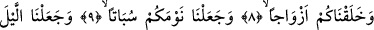

ÜSTÜNÜZDE
YEDİ KAT SAĞLAM GÖĞÜ
BİNA ETTİK
8. Sizi çifter çifter yarattık.
9. Uykunuzu bir dinlenme kıldık.
10. Geceyi bir örtü yaptık.
11. Gündüzü de çalışıp kazanma zamanı kıldık.
12. Üstünüzde yedi kat sağlam göğü bina ettik.
13. (Orada) alev alev yanan bir kandil yarattık.
14. Üstüste yığılıp sıkışan bulutlardan şarıl şarıl akan sular indirdik.
15. Size tohumlar, bitkiler yetiştirmek için
16. (Ağaçları) sarmaş dolaş olmuş bağlar bahçeler yetiştirmek için
“Sizi çifter çifter yarattık.” Bu ifâdede yer alan “halaknâ/yarattık” fiili, “lem” ile
olumsuzlaşıp mânâsı mâzîye dönüşen “elem nec’al/biz yapmadık mı?” muzâri fiili
üzerine mâtuftur. Âyetteki “ezvâcen” kelimesini ifâdeye katarak mânâ vermek gerekirse
“sizleri erkek-dişi çifter çifter yarattık” denmiş olmaktadır. Tâ ki bu çiftten birisi
diğeriyle huzur bulsun, birlikte yaşama ve geçim işleri düzene girsin, üreme ve eş bulma
gerçekleşsin. Arapçada ister canlı, ister mest ve ayakkabı gibi cansız, çift olan ve
birbirine yakın bulunan her iki nesneye “zevc” denilir. “Zevc” iki anlamına gelmez.
Zevc birbirine yakın olan iki nesnenin birisine denir. İkisine birden ise “zevcân” denilir.
Ne demek istediğimizi bir örnekle açmak gerekirse “karattuhû bi’l-mikradeyni” veya
“kasastuhû bi’l-mikassayni” denilir ki “ben onu makasın iki ağzıyla kestim” denmiş
olunmaktadır. Çünkü makasın ağzı alt ve üst olarak iki tanedir. Dolayısıyla burada
“makas” anlamında mikraz veya mikas kelimesi değil, yukarda geçtiği gibi mikrazayn ve
mikassayn kelimeleri kullanılmıştır. İşte âyetteki “ezvacen” kelimesini böyle anlamak
gerekir. Nitekim Harîri Dürretü’l-gavvâs isimli eserde böyle açıklama yapmaktadır.
Kamus müellifine göre birbirine yakın olan iki nesneye “humâ zevcânî” dendiği gibi
“hum zevcun” da denilebilir. Herhalde bu isimlendirme, iki şıktan birisinin adını